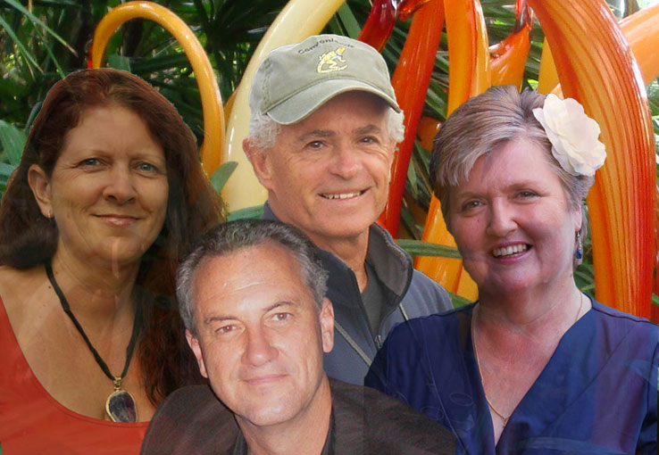
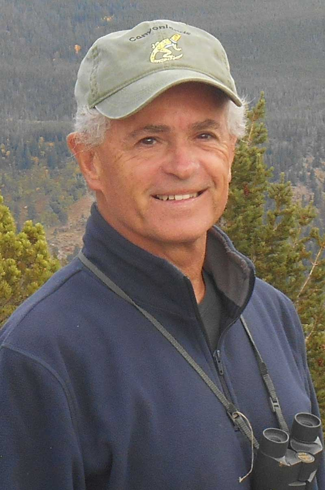

<div class="container content-md">
  <!-- Tab v3 -->
  <div class="row tab-v3">
    <div class="col-sm-3">
      <ul class="nav nav-pills nav-stacked">
        <li class="active"><a href="#fmembers" data-toggle="tab"><i class="fa fa-home"></i>
          Founding Members
        </a></li>
        <li><a href="#sandy" data-toggle="tab"><i class="fa fa-home"></i>
          Sandy Button
        </a></li>
        <li><a href="#rick" data-toggle="tab"><i class="fa fa-gear"></i>
          Rick Mercer
        </a></li>
        <li><a href="#kate" data-toggle="tab"><i class="fa fa-comments"></i>
          Kate Macnamara
        </a></li>
        <li><a href="#rod" data-toggle="tab"><i class="fa fa-cloud"></i>
          Rod West
        </a></li>
      </ul>
    </div>
    <div class="col-sm-9">
      <div class="tab-content">
        <div class="tab-pane fade in" id="sandy">
            
            <h4>Sandy</h4>

            <h1 id="how-it-all-began">How it all began</h1>

            <p>
              <strong>When I walked out of my house on a humid Thursday evening</strong>
              fifteen years ago I didn't know that I was embarking on a journey that was to
              change my life profoundly, and forever. Life as I knew it - living in
              Queensland with a high-flying corporate career, awesome house, great car, my
              beloved horses and dog - all about to be surrendered to a passion that set me
              alight like a spark on dry kindling.
            </p>

            <p>
              <strong>I have always had an interest in New Age, Healing, Self-Help and
              Spirituality</strong> although I came from a non-religious background so
              leaned toward words like the Universe and Source.
            </p>

            <p>
              <strong>So on that Thursday evening,</strong> when my Reiki/Meditation group
              gathered to listen to a recording of teachings channelled through a then
              little-known American, it definitely brought up some judgements. Channelling?
              God? Jesus? Jeshua? Christ? - not for me, thank you! But the moment I heard the
              message I was utterly consumed. I wanted to know more, I wanted to meet the man
              who spoke the words and <em>be part of it</em> - whatever 'it' was. I dived in;
              listened, read, watched and immersed myself in the <em>Way of Mastery</em> and
              all of the wisdom it offered.
            </p>

            <p>
              <strong>Several years later I met the channel, Jayem,</strong> and for the
              first time, the message within the teachings shifted from mental ideas to
              a palpable feeling state within the body. It was then that the spark became
              a flame and life as I knew it was turned upside down.
            </p>

            <p>
              <strong>Shortly afterwards, I felt moved</strong> to leave Australia and
              head for Bali, where I have been learning, and living the teachings as offered
              through Jayem. As his business partner, assistant, boss (as he jokingly calls
              me) and friend it has been a unique opportunity to engage in the work at
              a level that is vastly different to just attending a workshop. I feel enormous
              gratitude that I have been able to play a key role in the set up and
              running of all that has birthed through the <em>Way of Mastery</em> during the
              last eleven years.
            </p>

            <blockquote class="hero text-center">
              <p>
                <strong>Along the way I discovered that my deepest longing and passion lies in
                serving the awakening of humanity.</strong>
              </p>
            </blockquote>

            <p>
              It has been quite a journey to come to live from a place of true service and
              I also recognise that my journey is just beginning...
            </p>

            <h2>A vision emerged</h2>

            <p>
              <strong>I discovered a profound desire to extend Love,</strong> to touch
              hearts and minds, in the same way I have been touched. And with the gradual
              emergence of a specific vision it focused the energy like a laser beam.
            </p>

            <p>
              <strong>Living in Bali,</strong> I have been immersed in a way of life
              surrounded by the lushness of nature and the ever-present reminder of
              spirituality in the statues and buildings and daily ceremonies of the Balinese
              people.
            </p>

            <blockquote class="hero text-center">
              <p>
                <strong>In that daily soup, deeply engaged with these teachings about Love, there
                emerged within the vision of creating a place of great beauty and inspiration
                - a physical space that is a living, breathing experience of Christ
                Consciousness.</strong>
              </p>
            </blockquote>

            <p>
              <strong>Over time it began to crystallise into physical form</strong> as
              a Sanctuary - a Training and Retreat Centre, a call for a genuinely loving
              community - built in conjunction with the local people, so that their
              traditional ways are honoured and they also benefit from the development. Its
              name, I only discovered quite recently, is <em>Jalan Cinta</em> (the Way of
              Love in Indonesian): Jalan Cinta Sanctuary.
            </p>

            <h2>I see...</h2>

            <p>
              <strong>I see, with huge, overflowing gratitude,</strong> that 'my' entire
              life, with its specific corporate experience and spiritual trajectory, has been
              carefully woven towards this moment, this expression, right here, right now!
            </p>

            <p>
              <strong>I see that I am simply a midwife</strong> in the birthing of the
              Sanctuary. It belongs to no one person, and yet is here to serve anyone who is
              ready for its healing energies. While the Sanctuary is based in Bali, I sense
              that what is developed here, embodying the <em>Way of Love,</em> will extend
              around the world.
            </p>

            <p>
              <strong>I see that each moment, each choice, each decision,</strong> in the
              Sanctuary's creation and on-going running offers an opportunity to surrender my
              own thoughts and be informed by the Divine. To create a vehicle for living as
              Love, for embodying the essence of genuine spirituality, lived daily and lived
              unconditionally.
            </p>

            <p>
              <strong>I see that this project is being given to me as an
              opportunity</strong> to hold everyone (and myself!) in Love, to dive more
              deeply into my unique expression of the Divine - of what God desires to birth
              through me - to step into my own awakening, my own Christed Consciousness.
            </p>

            <p>
              <strong>May Love be extended through me,</strong> and as Jalan Cinta Sanctuary
              crystallizes into form, may it offer all who enter the opportunity to awaken to
              their own passion. May I be committed to seeing the miraculous in each being
              who steps through the gates, to reflecting it back to them and supporting the
              birth of their Divine inspirations into the world.
            </p>

            <p>
              May the Divine emerge through each of us for Only Love is Real! Only Love Is!
              And we are One!
            </p>

            <p>Sandy</p>

        </div>
        <div class="tab-pane fade in active" id="fmembers">
          
          <h4>Founding Members</h4>

          <p>
            <em>Jalan Cinta Sanctuary</em> and all that will occur here is something truly amazing.
            There is much to prepare, arrange, organise and build – it will take a village!
            Fortunately, a small group of people who all feel in alignment with this vision
            have felt the call to service and stepped forward in support.
          </p><br />

          <p>
            Here you can find out a little more about our journeys, and what our passion
            is, as we join together to birth <em>Jalan Cinta Sanctuary</em>.
          </p>
        </div>
        <div class="tab-pane fade in" id="rod">
            
            <h4>Rod</h4>

            <h1 id="a-love-story">A Love Story</h1>
            <p>
              All my life I have asked just one question in many forms. How can
              we live meaningful, fulfilling, authentic and connected lives
              without limitation?
            </p> 
            <p>
              I’ve argued with myself. I’ve argued with others. I’ve
              tried to convince myself it was beyond reach and wasn’t possible.
              I’ve felt irreparably broken and the scum of the earth. And I’ve
              felt I was better, smarter and more talented than others.
            </p>
            <p>
              I’ve made myself wrong and made others wrong. I’ve believed
              I was bad and rotten to the core. I’ve found fault with those
              I declared I loved.
            </p> 
            <p>
              I’ve felt alone and lost. Terrified.
            </p>
            <p>
              I studied the occult and tarot as a teenager, the ego at
              university, spent a decade in the tribal world of politics and the
              same in the cut and thrust of business. I had moments of submittal
              highs and the lowest of lows.
            </p> 
            <p>
              However even through my
              darkest moments I could sense there was a way to heal. A way to
              make whole and one again what appeared separate. To unify and
              reunify.
            </p> 
            <p>
              I knew there was a way to live a life that made sense.
            </p>
            <p>
              From over fifty years of study and personal
              exploration the answer to my question has emerged with
              unquestionable clarity.
            </p> 
            <p>
              <strong>The answer</strong> was so
              simple but I have discovered for myself can take a life time to
              live.
            </p> 
            <p>
              The answer was contained in a word that revealed everything.
            </p> 
            <p>
              <strong>Love.</strong>
            </p> 
            <p>
              Love is all we need.
            </p> 
            <p>
              Love connects us to our own soul and the divine. It
              connects us with our heart and with our genius.
            </p> 
            <p>
              Love heals our past wounds and transcends judgment.
            </p> 
            <p>
              Love releases our passion and our creativity.
            </p> 
            <p>
              Love reminds us we are whole and
              perfect just as we are. Nothing to change and nothing to fix.
            </p>
            <p>
              Love accepts each other warts and all. Love accepts our own
              personality warts and all.
            </p> 
            <p>
              With love we can connect to
              create a better world and care for mother earth.
            </p> 
            <p>
              Only with love can we access the truth.
            </p> 
            <p>
              Love sets us free.
            </p>
            <p>
              <strong>AND</strong> it was love that brought us all
              <strong>together</strong> to build a Sanctuary dedicated to our
              hearts, inspired by our wisdom and made possible by our
              passion.
            </p> 
            <p>
              For me Jalan Cinta Sanctuary is:
            </p> 
            <ul class="fa-ul"> 
              <li>
                <i class="fa-li fa fa-star-o"></i>
                A place beyond right and wrong.
              </li> 
              <li>
                <i class="fa-li fa fa-star-o"></i>
                A living breathing example of love in form.
              </li> 
              <li>
                <i class="fa-li fa fa-star-o"></i>
                A whole and unified vision of the universal eternal teachings.
              </li> 
              <li>
                <i class="fa-li fa fa-star-o"></i>
                A sacred marriage of the transcendent father and earthly mother.
              </li> 
              <li>
                <i class="fa-li fa fa-star-o"></i>
                An incubation and birthing centre to transform our world. A world beyond fear and division.
              </li> 
              <li>
                <i class="fa-li fa fa-star-o"></i>
                A world where we release our limiting beliefs and unleash our potential.
              </li>
            </ul>
            <p>
              <strong>I am</strong>
              absolutely totally committed to creating Jalan Cinta Sanctuary as
              a safe haven for people from all walks of life to come, immerse, be
              held in unconditional love, to heal and to be empowered to live an
              extraordinary life!
            </p> 
            <p>
              Join us on this extraordinary adventure.
            </p> 
            <p>
              Love and blessings,
            </p> 
            <p>
              Rod
            </p>
        </div>
        <div class="tab-pane fade in" id="kate">
            
            <h4>Kate</h4>
            <p>
              <strong>It all began with a simple question.</strong> I was a nurse at the time and curious
              about what a visitor had offered a patient. “What’s Reiki?” I asked. She
              beckoned me to her, to simply experience it. Her hands touched my shoulders and
              tingling energy poured through my body. Something stirred deep within my being. 
            </p>

            <p>
              <strong>Over the coming years I was thirsty to learn meditation, energetic and
              spiritual healing.</strong> It became a quest to support my younger daughter in her
              struggle with spinal scoliosis and ultimately the radical surgeries that she
              underwent. 
            </p>

            <p>
              <strong>Then in the late 1990s, memories of childhood trauma surfaced.</strong> This ignited
              a desperate need to heal the deep emotional and psychological wounds and
              suffering that tormented me. I resourced many avenues of healing, some of which
              gave a sense of relief, yet I knew there must be more.
            </p>

            <p>
              <strong>A desire began to enter my heart to support others to heal while continuing my
              own journey.</strong> I studied counselling and psychology and set up a private
              practice. Yet even with these skills I still felt there must be more. A deep
              question arose within me: 
            </p>

            <h2>
              How do we truly heal?
            </h2>

            <p>
              <strong>The universe began to answer my heartfelt question,</strong> though I didn’t recognise
              it initially. Through an incredible “coincidence” a magazine advertising a book
              called <em>The Way of the Heart</em> found its way to my kitchen table and fell open at
              the relevant page. I rushed to the phone to order a copy and when it arrived
              I immersed myself in it, a manuscript of profound lessons given by Jeshua, the
              one known by many as Jesus, channelled by a man called Jayem.
            </p>

            <p>
              <strong>A new journey began</strong> and the <em>Way of Mastery</em>, as it is 
              now known, led me to
              beautiful Bali for intensive retreats and pilgrimages around the world. It was
              during these retreats that I experienced deep and profound healing.
            </p>

            <p>
              Out of my own deeper healing emerged a desire to share my journey, which
              birthed my book <em>Returning Home to the essence of who I am.</em>  My intention with
              it is to provide a real example and instil hope that we can truly heal – to
              return home to who we are, to Love itself. The desire then evolved into a deep
              passion to support others in their healing journey, to grow into their
              empowerment and awaken to their deepest truth.
            </p>

            <h2>
              A passion and vision now swells my heart&hellip;
            </h2>

            <p>
              <strong>A holistic recipe that supports each of us to heal, awaken and return home</strong> to
              our True Self – a unique blend of modern psychology and ancient wisdom,
              philosophies and principals with practical, proven tools for genuine healing
              and transformation in our consciousness.
            </p>

            <p>
              <strong>A safe space, a place of beauty,</strong>imbued with the culture of Love where all are
              welcomed, accepted and supported on their journey.
            </p>

            <p>
              <strong>Deep gratitude fills my heart</strong> for my own journey that continues to unfold in
              this incredible adventure of enjoining with friends in the creation of Jalan
              Cinta Sanctuary. As I surrender fully into my passion and purpose in the Way of
              Love may the sweet mystery of God flow through me. Let's walk the Way of Love
              together!
            </p>

            <p>
              Kate
            </p>
        </div>
        <div class="tab-pane fade in" id="rick">
            
            <h4>Rick</h4>
            <p>
            </p>
        </div>
      </div>
    </div>
  </div>

</div>


